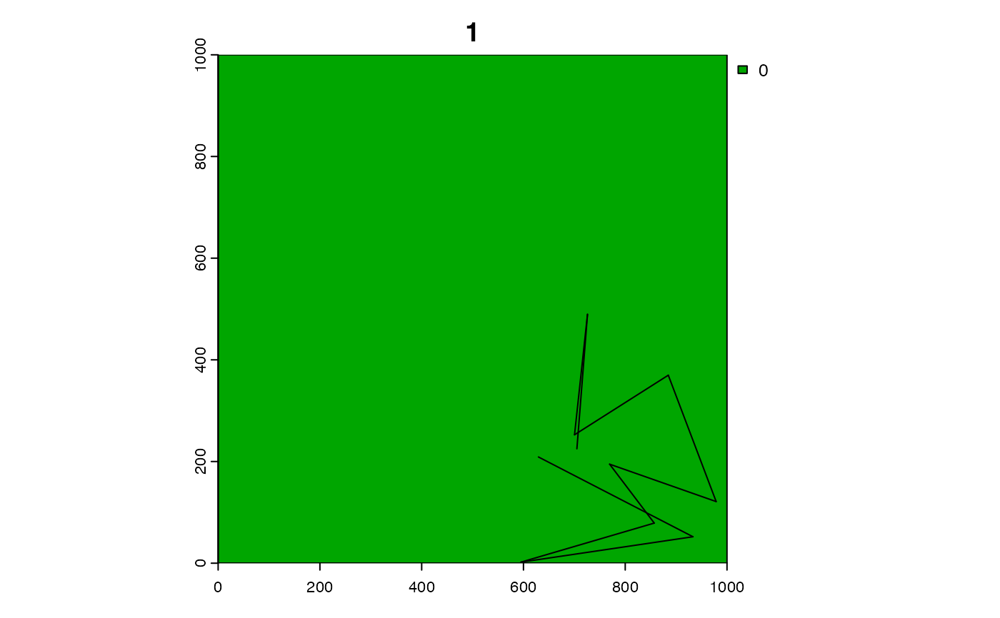
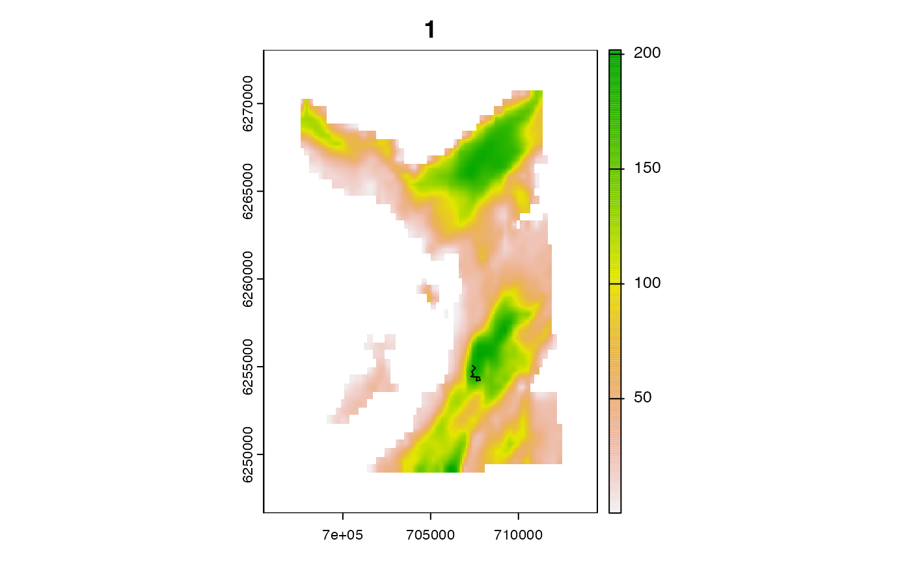
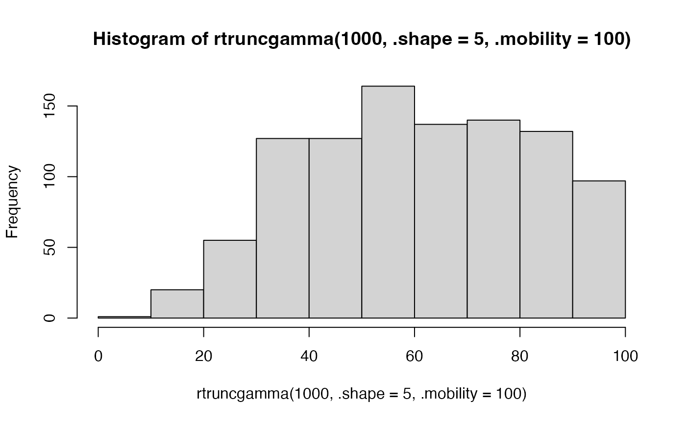
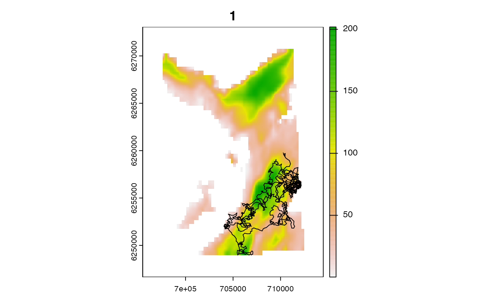
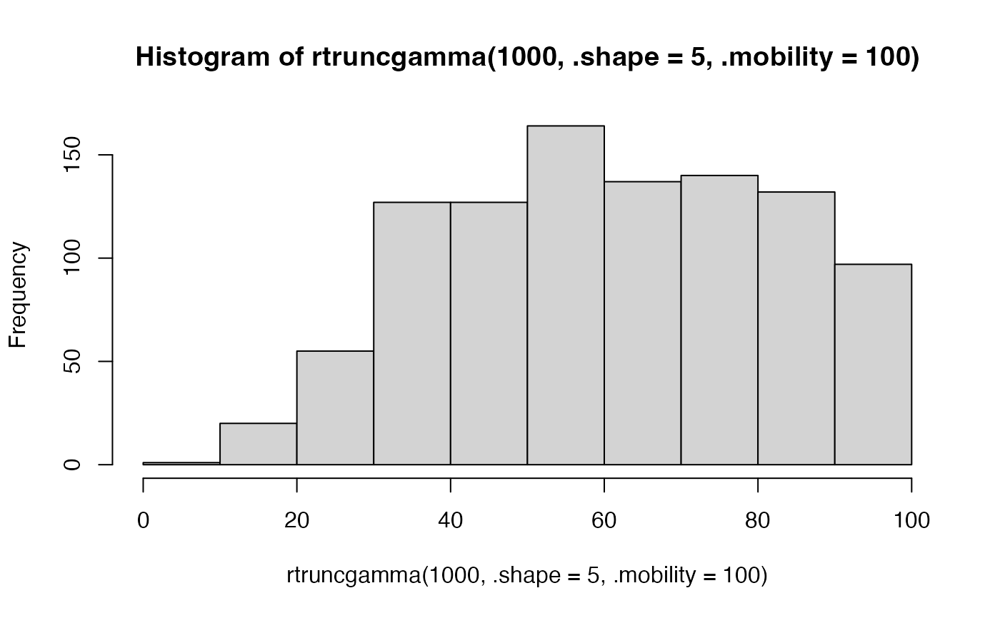
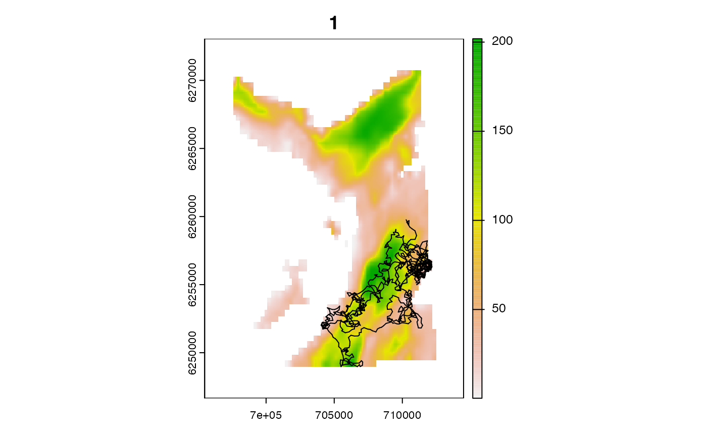

sim_path_walk() facilitates the simulation of discrete-time animal movement paths from walk models (e.g., random walks, biased random walks, correlated random walks).
sim_path_walk(
.bathy = spatTemplate(),
.lonlat = FALSE,
.origin = NULL,
.n_step = 10L,
.timestamp = NULL,
.sim_length = rlen,
.sim_angle = rangrw,
...,
.n_path = 1L,
.plot = TRUE,
.one_page = FALSE
)Arguments
- .bathy
A
SpatRasterthat defines the region within which movements are simulated. Movements are simulated in continuous space but restricted within the boundaries defined by.bathyand non-NA regions.- .lonlat
A
logicalvariable that defines whether or not.bathyuses longitude/latitude coordinates.- .origin
(optional) A one-row, two-column matrix that defines the origin. If unsupplied,
.originis sampled at random from.bathy. One origin is used for all simulated paths (see.n_path).- .n_step
An
integerthat defines the number of time steps.- .timestamp
(optional) A vector of time stamps, one for each time step, for inclusion in the output
data.tableas atimestampcolumn.- .sim_length, .sim_angle, ...
Functions and accompanying arguments that simulate step lengths and turning angle. Simulated step lengths should be in map units (e.g., metres) if
.lonlat = FALSEor metres if.lonlat = TRUE. Turning angles should be in degrees. The functions must accept four named arguments, even if unused:.n---anintegerthat defines the number of simulated outcome(s);.prior---anumericvector that defines the simulated value(s) from the previous time step;.t---anintegerthat defines the time step;...---additional arguments, if needed;
If
.prioris used, the function should be able to handle the first time step (when.prioris set toNULL). Seerangcrw()(below) for an example.Note that
...is passed down fromsim_path_walk()to both.sim_lengthand.sim_angleso care is required to ensure that...parameters are handled correctly).The following template functions are provided:
rlen()is an example.sim_lengthfunction that simulates step lengths from a truncated Gamma distribution (viartruncgamma());rangrw()is an example.sim_anglefunction that simulates uncorrelated turning angles from a wrapped normal distribution (viarwn());rangcrw()is an example.sim_anglefunction that can simulate correlated turning angles (viarwn());
- .n_path
An
integerthat defines the number of paths to simulate.- .plot, .one_page
Plot options.
.plotis alogicalvariable that defined whether or not to plot.bathyand simulated path(s). Each path is plotted on a separate plot..one_pageis a logical variable that defines whether or not to produce all plots on a single page.
Value
sim_path_walk() returns a data.table with 10 columns:
path_id--- anintegerthat identifies each path;timestep---anintegerthat defines the time step;cell_id,cell_x,cell_y,cell_z---integer/numericvectors that define the locations of the simulated positions on.bathy;x,y---numericvectors that define simulated x and y coordinates;length,angle---numericvectors that define simulated step lengths and angles (for the movement from timesteptto time stept + 1);
Details
The following convenience functions are provided:
rtruncgamma()andrwn()simulate step lengths (from a truncated Gamma distribution) and turning angles (from a wrapped normal distribution);rlen(),rangrw()andrangcrw()are wrappers in the form required bysim_path_walk();sim_path_walk()simulates the movement path(s);
Within sim_path_walk(), at each time step, if .lonlat = FALSE, current locations (x, y) are updated via x + length * cos(angle) and y + length * sin(angle).
If .lonlat = TRUE, current locations are updated via geosphere::destPoint().
.lonlat support is experimental. Be especially careful with correlated random walks if lonlat = TRUE. On an ellipsoid, the initial (simulated) bearing is not the same as the final bearing, but is not currently updated.
See also
sim_*functions implement de novo simulation of movements and observations:sim_helpersare convenience functions for simulations;sim_array()simulates acoustic array(s);sim_path_walk()simulates movement path(s) via a walk model;sim_detections()simulates detection(s) at receivers;
pf_forward()implements forward simulation-based reconstruction of movement paths;pf_backward_sampler()implements backward simulation-based reconstruction of movement paths;skillfunctions compared simulated and reconstructed patterns to evaluate model skill;
Examples
if (rlang::is_installed(c("circular", "truncdist"))) {
require(data.table)
require(dtplyr)
require(dplyr, warn.conflicts = FALSE)
require(circular)
#### Example (1): Implement function with default options
# The function returns a data.table with simulated locations
set.seed(1)
p <- sim_path_walk()
p
#### Example (2): Update region for simulation
p <- sim_path_walk(dat_gebco())
p
#### Example (3): Specify origin
origin <- cbind(710275.3, 6259763)
p <- sim_path_walk(dat_gebco(), .origin = cbind(710275.3, 6259763))
#### Example (4): Update number of steps/number of paths
p <- sim_path_walk(dat_gebco(),
.origin = origin,
.n_step = 100L, .n_path = 5L,
.plot = TRUE, .one_page = TRUE)
# The output contains 5 paths, each of 100 steps
p |>
group_by(path_id) |>
summarise(n = n()) |>
as.data.table()
#### Example (5): Modify step length parameters
hist(rtruncgamma(1e3, .shape = 5, .mobility = 100))
p <- sim_path_walk(dat_gebco(),
.origin = origin,
.n_step = 100L,
.shape = 5, .mobility = 100)
p
#### Example (6): Modify `.sim_length` model
# Use time-varying step lengths dependent upon some behavioural state
b <- data.table(x = c(0, 0, 1, 1, 1, 1, 1))
hist(rtruncgamma(.n = 1e3, .shape = 5, .scale = 5))
hist(rtruncgamma(.n = 1e3, .shape = 15, .scale = 15))
sim_length <- function(.n = 1,
.prior = NULL, .t = NULL, .state, ...) {
if (.state$x[.t] == 0L) {
rtruncgamma(.n = .n, .shape = 5, .scale = 5, .mobility = 50)
} else if (.state$x[.t] == 1L) {
rtruncgamma(.n = .n, .shape = 15, .scale = 15, .mobility = 500)
}
}
p <- sim_path_walk(dat_gebco(),
.origin = origin,
.n_step = nrow(b) + 1,
.sim_length = sim_length, .state = b)
p
#### Example (7): Update model for turning angles
# Use biased random walk by modifying the .mu parameter in rangrw()
# E.g., To simulate movement north in a straight line, we use .mu = -99
# (accounting for the longitude of natural origin = -9 in dat_gebco())
# and .rho = 1:
rwn(.n = 10, .mu = -(90 + 9), .rho = 1)
p <- sim_path_walk(dat_gebco(),
.origin = origin,
.n_step = 10L,
.sim_angle = rangrw, .mu = -(90 + 9), .rho = 1,
.one_page = FALSE)
p
#### Example (8): Use a correlated random walk model
p <- sim_path_walk(dat_gebco(),
.origin = origin,
.n_step = 1000L, .n_path = 1L,
.sim_angle = rangcrw, .rho = 0.9,
.one_page = FALSE)
# The correlation between sequential angles is close to the simulated value:
adt <- data.table(a0 = p$angle, a1 = lead(p$angle)) |> na.omit()
cor.circular(degrees(adt$a0), degrees(adt$a1))
#### Example (9): Use custom step/length or turning angle models
sim_angle_vmd <- function(.n = 1L, .prior = NULL, ...) {
as.numeric(
circular::rvonmises(
n = .n,
mu = degrees(0),
kappa = 0,
control.circular = list(units = "degrees")
)
)
}
p <- sim_path_walk(dat_gebco(),
.origin = origin,
.n_step = 1000L,
.sim_angle = sim_angle_vmd,
.one_page = FALSE)
p
}
#> Loading required package: circular
#>
#> Attaching package: ‘circular’
#> The following objects are masked from ‘package:stats’:
#>
#> sd, var


 

#> path_id timestep length angle x y cell_x cell_y
#> 1: 1 1 178.2296 37.67500 710275.3 6259763 710242.1 6259807
#> 2: 1 2 226.5120 347.49495 710453.5 6259759 710442.1 6259807
#> 3: 1 3 273.7661 155.40880 710376.0 6259972 710342.1 6260007
#> 4: 1 4 311.7281 86.22181 710348.7 6259699 710342.1 6259707
#> 5: 1 5 262.1509 255.25676 710295.3 6259392 710342.1 6259407
#> ---
#> 996: 1 996 217.4527 352.92277 707946.5 6255040 707942.1 6255007
#> 997: 1 997 254.1643 217.15488 708052.0 6255230 708042.1 6255207
#> 998: 1 998 262.3224 15.32968 707816.4 6255135 707842.1 6255107
#> 999: 1 999 298.9736 276.00928 707572.6 6255232 707542.1 6255207
#> 1000: 1 1000 NA NA 707841.7 6255101 707842.1 6255107
#> cell_z cell_id
#> 1: 59.94371 25228
#> 2: 53.29665 25230
#> 3: 51.76815 24849
#> 4: 58.29612 25419
#> 5: 63.72057 25989
#> ---
#> 996: 178.93227 34325
#> 997: 175.70760 33946
#> 998: 188.29716 34134
#> 999: 194.68367 33941
#> 1000: 188.29716 34134


#> path_id timestep length angle x y cell_x cell_y
#> 1: 1 1 178.2296 37.67500 710275.3 6259763 710242.1 6259807
#> 2: 1 2 226.5120 347.49495 710453.5 6259759 710442.1 6259807
#> 3: 1 3 273.7661 155.40880 710376.0 6259972 710342.1 6260007
#> 4: 1 4 311.7281 86.22181 710348.7 6259699 710342.1 6259707
#> 5: 1 5 262.1509 255.25676 710295.3 6259392 710342.1 6259407
#> ---
#> 996: 1 996 217.4527 352.92277 707946.5 6255040 707942.1 6255007
#> 997: 1 997 254.1643 217.15488 708052.0 6255230 708042.1 6255207
#> 998: 1 998 262.3224 15.32968 707816.4 6255135 707842.1 6255107
#> 999: 1 999 298.9736 276.00928 707572.6 6255232 707542.1 6255207
#> 1000: 1 1000 NA NA 707841.7 6255101 707842.1 6255107
#> cell_z cell_id
#> 1: 59.94371 25228
#> 2: 53.29665 25230
#> 3: 51.76815 24849
#> 4: 58.29612 25419
#> 5: 63.72057 25989
#> ---
#> 996: 178.93227 34325
#> 997: 175.70760 33946
#> 998: 188.29716 34134
#> 999: 194.68367 33941
#> 1000: 188.29716 34134